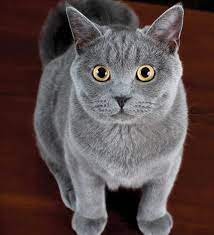

|  |
| American Shorthair |
BEHAVIOR
This breed is the Platonic ideal of cat: American Shorthairs are moderate in temperament, build, type, and size. They're good at keeping themselves amused and can be a great first-time cat or cat for a busy family. They're loving but not suffocatingly effusive; they're active but not climbing your drapes. The American Shorthair is an intelligent and independent cat's cat.
-
Extremely smart and even tempered.
- Not very chatty, preferring to chirp or make sweet squeak sounds.
- Very athletic. Once touted as the all-American mouser, this breed prefers now to follow its favorite people from room to room.
- Favors walking on its own over being picked up and cradled.
- Behaves gently around children.
- Lovable but not clingy.
GROOMING
Just because the American shorthair has a short, dense coat doesn’t mean you can skip on grooming. A weekly brushing, especially when your kitty is shedding its winter coat, will eliminate dead hair, dirt, and any potential mats. These cats have thicker seasonal coats. Ingrid Johnson, Certified Cat Behavior Consultant, Cat Groomer, and author of Fundamentally Feline uses a special brushing technique. For this breed, “I comb quite vigorously,” she says. “Then I comb backwards to agitate the coat; it gets out a lot of the coat,” she says. She suggests regular grooming for your cat. “If you maintain your cat’s coat, it’s a lot more pleasant for the cat,” she says.
HEALTH PROBLEMS
When you have generations of working cats in your ancestry, you can be assured this cat has evolved to be a rugged, healthy breed. An American shorthair’s lifespan can be anywhere from 15 to 20 years and they don’t really have any breed-specific health issues. Some animals can develop hypertrophic cardiomyopathy (HCM) or hip dysplasia, but this is fairly rare in this breed. Otherwise, with regular vaccinations, an American shorthair will remain healthy and happy. Of course, like other breeds, the American shorthair needs regular dental and nail care and should always be spayed or neutered and kept indoors at all times.
NUTRITION
They need a balanced and high-quality diet, which will allow them to stay in good health, without gaining too much weight. A decent amount of daily exercise should be combined with their diet.